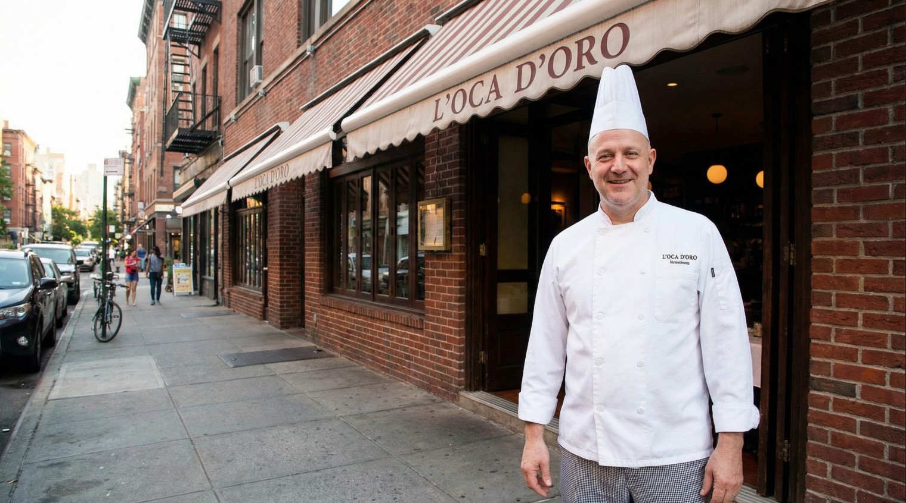
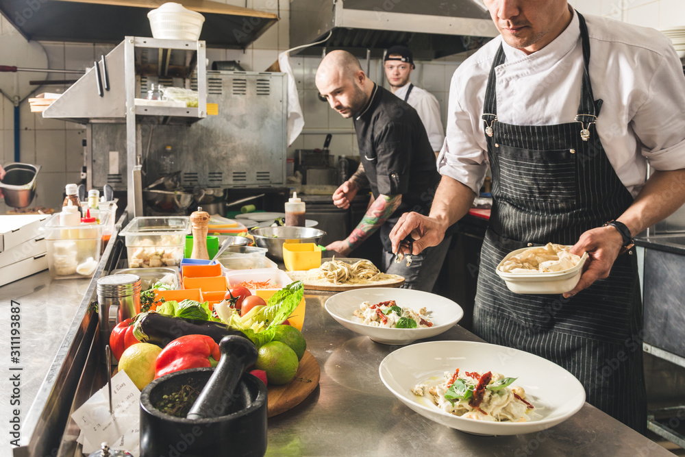
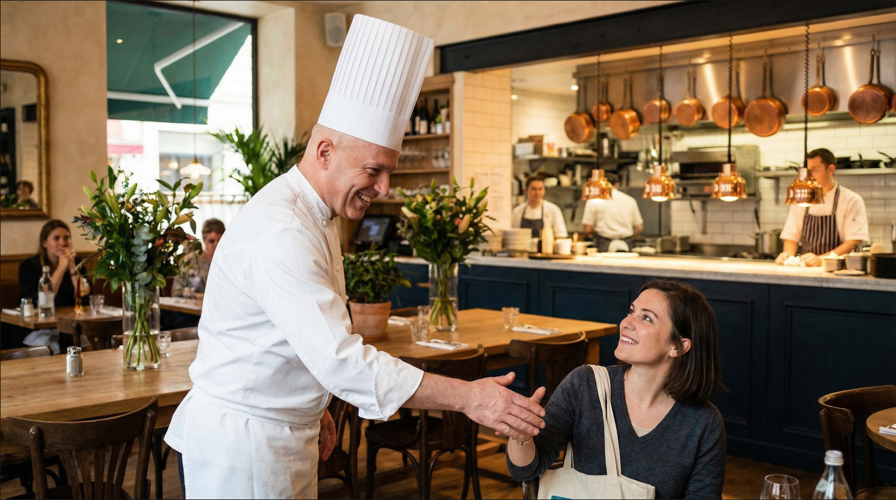
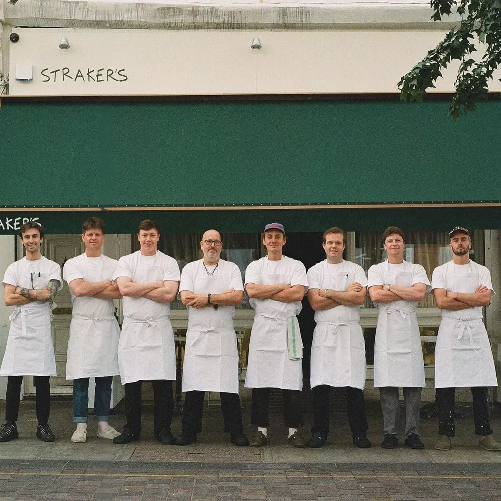

Vår historia
Chef Tingeling föddes ur en enkel idé: att visa hur långt man kan komma med respekt för råvaran, kärlek till hantverket och modet att tänka nytt. Restaurangen är skapad av Mr. Strid, vinnare av MasterChef Sverige, som efter år av studier vid några av världens mest prestigefyllda kockskolor valde att återvända till grunden – smaken, tekniken och berättelsen bakom maten. Det här är inte en restaurang byggd på trender. Det är en plats byggd på övertygelse.

Filosofi
Det svenska köket har formats av naturen. Av skogar, sjöar, hav och årstider som kräver eftertanke. På Chef Tingeling låter vi detta styra varje beslut i köket. Vi tror på: Enkelhet med precision Säsongsbaserade råvaror Mat som känns lika mycket som den smakar Precis som förr handlar god mat inte om överflöd, utan om kunskap. Om att förstå råvarans fulla potential och förädla den med omsorg.

Köket idag
Vårt kök arbetar nära lokala producenter och anpassar menyn efter vad naturen erbjuder just nu. Därför förändras rätterna över tid – vissa försvinner, andra återkommer i ny form. Varje tallrik är noggrant komponerad för att skapa balans mellan det välbekanta och det oväntade. Traditionella smaker möter moderna tekniker, alltid med tydlig identitet och syfte.

Rummet
restaurangen är designad för att spegla maten vi lagar: varm, avskalad och inbjudande. Naturliga material, dämpade färger och ett öppet kök skapar en miljö där gästen får känna sig nära både maten och människorna bakom den. Här ska man kunna stanna länge. Prata, smaka, dela och upptäcka.

Mr. Strid – Kocken bakom Chef Tingeling
För Mr. Strid handlar matlagning om mer än teknik och tävlingar. Det handlar om ansvar. Att föra kunskap vidare, att utmana det invanda och att alltid laga mat med respekt – för råvaran, gästen och yrket. Vinsten i MasterChef blev starten på nästa kapitel, men drivkraften är densamma som alltid: att skapa mat som berör.

Välkommen
Chef Tingeling är en restaurang för dig som uppskattar detaljerna. För dig som vill uppleva något äkta, genomtänkt och levande. Vi ser fram emot att få välkomna dig till vårt bord.
